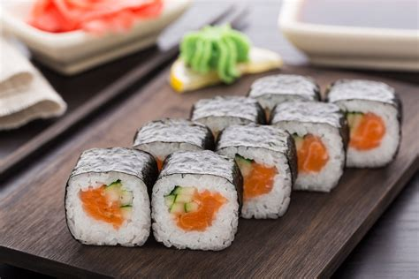

O Masashi Kishimoto é só o escritor de Naruto, um dos animes de maior sucesso da história. Comer um sushi com ele seria icônico, não apenas pela companhia, mas pela curiosidade que tenho sobre como era a verdadeira história do desenho, devido ao crescimento, ele fez alterações na história para que a mesma alcançasse mais pessoas. Talvez fosse uma experiência frustante, mas ainda assim, mataria a curiosidade!
| Ingredientes | Quantidade |
|---|---|
| Arroz para Sushi. | -- |
| água. | 3 xícaras de chá. |
| café de vinagre de arroz. | 1/4 xícara. |
| açúcar. | 2 clr de sobremesa. |
| manga fatiada. | 1 unid. |
| pepino japonês. | 1 unid. |
| folhas de Nori. | -- |
| raiz forte | -- |
| kani | -- |
Passo 1
Deixe o arroz de molho por 30 minutos, depois lave bem até a água ficar cristalina.
Passo 2
Coloque no fogo com tampa até secar e ficar bem inchado.
Passo 3
Misture o vinagre o sal e açúcar, até dissolver bem.
Passo 4
Coloque o arroz ainda quente em uma bacia plástica e vá despejando devagar a mistura de vinagre mexendo com movimentos rápidos.
Passo 5
Coloque a esteirinha de frente para você e disponha uma folha de alga sobre ela, deixando um espaço livre de um centímetro, nas extremidades da esteira.
Passo 6
Isso permite que você enrole melhor.
Passo 7
Vá pegando pequenas porções de arroz e espalhando sobre a alga.
Passo 8
Coloque sobre o arroz, fatias kani e umas tirinhas de pepino e manga e um pouquinho de raiz forte.
Passo 9
Enrole apertando com cuidado para dar um formato uniforme e firme.
Passo 10
Corte os sushis com 1,5 cm de altura.
Passo 11
Bom Apetite!
